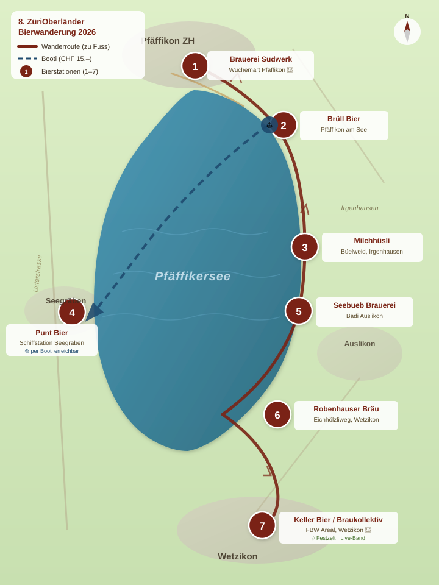

1
Brauerei Sudwerk🚩 START/ZIEL
Wuchemärt Pfäffikon
- Golden AleGolden Ale4.8%
- HellesLager Hell5.0%
Markttreiben · Sudwerk Ausschankwagen
Der Geheimtipp unter den Bierwanderern — 7 lokale Brauereien rund um den Pfäffikersee, ein Humpen zum Behalten, unterwegs zu Fuss oder mit dem Booti.
Eine Region, sieben Brauereien, ein Tag voller Entdeckungen.
Es ist das Privileg unserer schönen Region, dass wir rund um den Pfäffikersee gleich sieben lokale Brauereien versammeln dürfen — jede mit Charakter, jede mit Leidenschaft fürs Handwerk. Dein Ticket lösst Du bequem per QR-Code. Du erhältst den Bierhumpen (2 dl) zum Behalten. Das erste Bier ist gratis — danach degustierst Du an jeder Station für CHF 1.50 pro dl. Pro Brauerei stehen mindestens drei Biere zur Auswahl.
Reihenfolge und Anzahl der Stationen bestimmst Du selbst — ob im Gruppenzug oder gemütlich zu zweit, ob gerade durch oder im Zickzack dem See entlang. An allen Stationen gibt's auch alkoholfreie Getränke, Stationen mit 🍴 bieten Verpflegung.
Bitte respektiert die Natur: keine Abfälle liegen lassen, rücksichtsvoll unterwegs — und viel Freude beim Probieren!
Beide Orte sind Start UND Ziel. Wähle den, der besser zu Deinem Tag passt.
Sudwerk Ausschankwagen
Start: 10–16 Uhr · Letzter Ausschank 17 Uhr
Festzelt Braukollektiv · TapRoom · Live-Band · frische Pasta
Start: 10–16 Uhr
Welche Variante passt zu Dir?
Entweder… startest Du in Pfäffikon am belebten Wuchemärt an der Seestrasse. Sudwerk Ausschankwagen, dann zum ersten Bierstand fürs Frühstück-Bier. Richtung Pfäffikersee einlaufen, verschiedene Biere testen, dem See entlang Richtung Wetzikon zum Festzelt im FBW Areal. Je nach Wetter und Kapitän: Rundkurs auf dem See zur Punt-Bier-Seeseite — und wieder zurück.
Oder… Du beginnst Dein „Frühstück" im TapRoom vom Braukollektiv ZüriOberland und steuerst die Stationen Richtung Pfäffikon an. In der Industrie Wetzikon ist es ruhig, Du wirst ohne Ablenkung die Biere der Brauereien und deren bierfreundlichen Zapfkünstler erkunden können. Zum Abschluss an der Seestrasse einen feinen Whiskey bei „Dänu's" geniessen und/oder in einem der Restaurants bei einem feinen Znacht den Tag Revue passieren lassen.
7 Bier-Stationen rund um den Pfäffikersee. Bootsfahrt optional (CHF 15.–).

🍴 = Verpflegung möglich · alkoholfreie Getränke an allen Stationen
Nach der Wanderung geht's weiter im Braukollektiv ZüriOberland — ein würdiger Abschluss für einen Tag voller Biere, Begegnungen und Bewegung.
CHF 20.– inkl. Bierhumpen (2 dl) zum Behalten. Anmeldung online, Einlass per QR-Code.
Das 1. Bier ist gratis. Danach CHF 1.50 pro dl an jeder Station. Mindestens 3 Biere pro Brauerei zur Auswahl.
CHF 15.– pro Person — separat zu lösen. Erste Fahrt ab 11:30 Uhr, Pfäffikon ↔ Seegräben.
Frei wählbar. Keine Pflichtroute, keine Pflichtzeit — wanderst Du so viel oder so wenig Du magst.
Stationen mit 🍴-Symbol bieten Essen. Am Ziel: frische Pasta im Festzelt.
Wir sind Gast in einer schönen Landschaft. Keine Abfälle liegen lassen, rücksichtsvoll unterwegs.